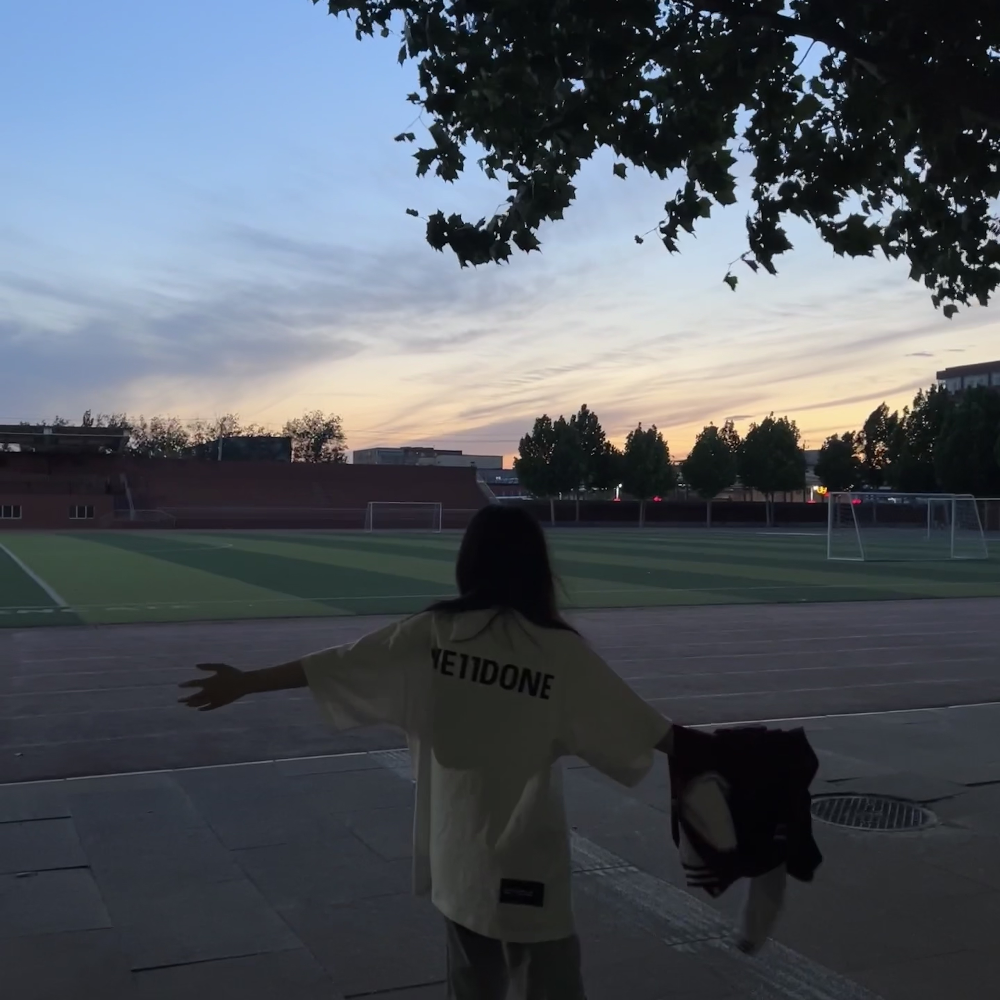
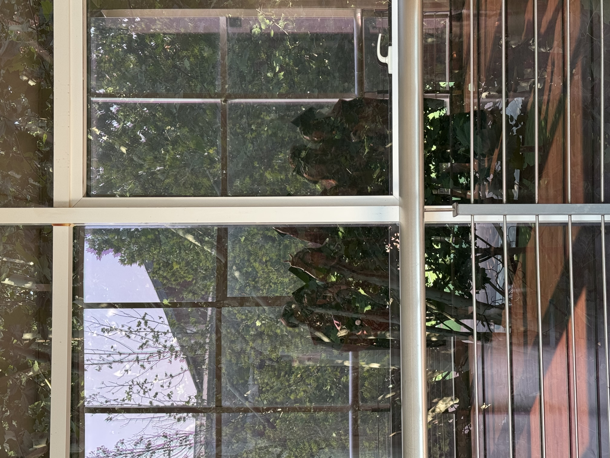
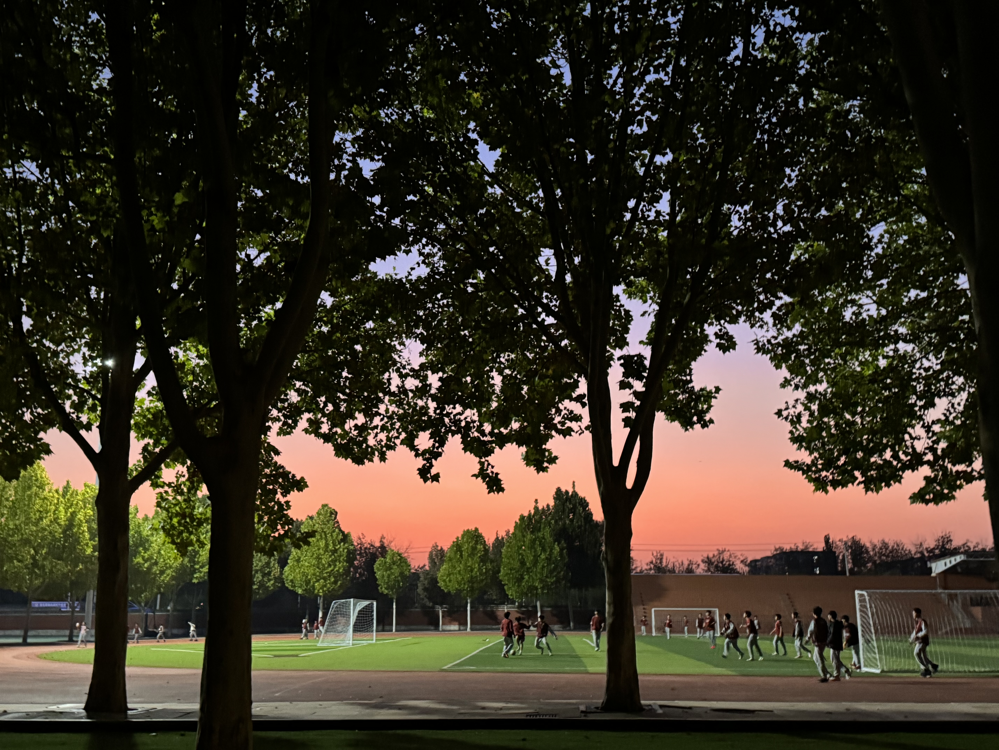

A SOUNDTRACK TO MY HIGH SCHOOL YEARS
These five songs remind me of my high school years and the people who made that time special. Whenever I listen to them, I feel like I am back in those ordinary but unforgettable moments. This collection is a way to preserve those memories through music and photographs.

Troye Sivan ft. Alex Hope
2015

Glass Animals
2020

step.jad 依加
2023
Justin Bieber
2021
Sting
1993